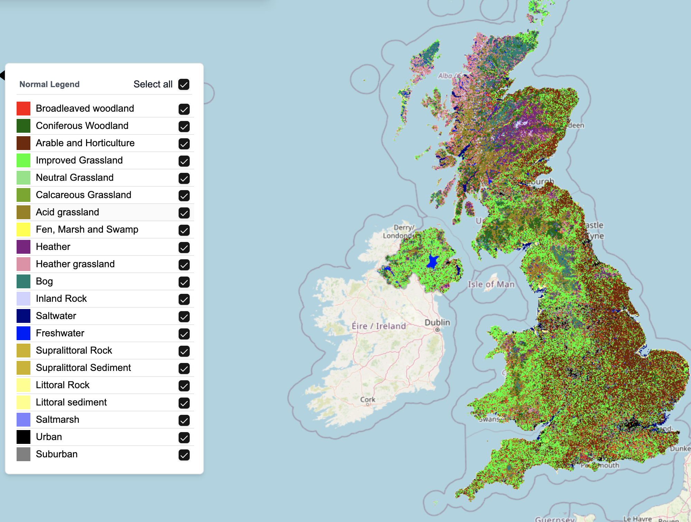

3 Satellite Imagery Data
4 Introduction
Satellite imagery constitutes one of the most powerful sources of information for understanding the Earth’s surface and its dynamic processes. Defined broadly as grid-based or raster data, where the Earth’s surface is represented as a matrix of pixels (or “grid cells”), each with a value corresponding to a specific measurement, captured by sensors mounted on orbital platforms. These data encompass a range of spectral, spatial, temporal, and radiometric characteristics that distinguish them from traditional, ground-based environmental observations. Unlike airborne systems that typically conduct surveys using aircraft such as small to medium-sized planes, helicopters, or drones (UAVs), or in situ field measurements, satellite data provide consistent, synoptic coverage across national and continental scales, enabling systematic monitoring over time.
Since the launch of Sputnik 11 in 1957 and Landsat 12 in 1972, satellite remote sensing has rapidly advanced alongside improvements in sensor technology, data storage, and transmission capabilities. Today, hundreds of satellites operated by governments and private companies provide images with a level of detail and frequency that would have been impossible just a decade ago. This chapter introduces the main types of satellite imagery, how they are collected and prepared for analysis, and common methods used to interpret them.
5 Chapter Objectives
- Introduce key concepts and terminology associated with satellite imagery.
- Situate satellite data within the wider geospatial data ecosystem, comparing it with traditional data collection methods.
- Describe the main sensor types, platforms, and missions, highlighting their strengths and constraints.
- Explain acquisition pathways, preprocessing workflows, and common analytical approaches.
- Highlight the value of satellite imagery for environmental monitoring, urban planning, and disaster response, emphasising its role in supporting informed decision-making at multiple scales.
6 Fundamentals of Satellite Imagery
6.1 Sensor Types
Satellite sensors are tools that collect data about the Earth by detecting different types of electromagnetic energy. These sensors vary mainly in the portion of the electromagnetic spectrum they measure and the kind of data they produce. The electromagnetic spectrum includes all forms of light, from visible colours to wavelengths the human eye cannot see, such as infrared and microwave radiation (Campbell and Wynne 2011). Sensors fall into two main categories: passive sensors, which measure natural energy (usually sunlight) reflected or emitted from the Earth’s surface, and active sensors, which emit their own signal and measure how it reflects back (Jensen 2009). Understanding these differences is important because each type of sensor offers specific advantages depending on the observation needs.
Optical sensors capture reflected sunlight in visible and near-infrared wavelengths, creating images similar to photographs. These are commonly used for land cover mapping and vegetation analysis (Campbell and Wynne 2011). Radar sensors, especially Synthetic Aperture Radar (SAR), send out microwave signals and measure the reflected response, allowing them to collect data in all weather conditions and at night (Ferretti, Prati, and Rocca 2002). Thermal sensors detect heat emitted from the Earth’s surface and are often used to monitor surface temperatures, detect wildfires, and assess building heat loss (Jensen 2009). Hyperspectral sensors record information across hundreds of narrow image bands (i.e., electromagnetic wavelengths), making it possible to detect subtle differences in surface materials, which is valuable in areas such as agriculture, environmental monitoring, and mineral exploration (Richards, Richards, et al. 2022; Goetz 2009).
A summary of these sensor types is provided in Table 6.1. Each sensor type is suited to specific applications. Optical imagery is effective for monitoring crops, forests, and urban development. Radar is ideal in areas with frequent cloud cover or during night-time, for instance in flood mapping or infrastructure monitoring. Thermal imagery supports early wildfire detection and energy audits of buildings. Hyperspectral data enable detailed analysis of surface materials, supporting targeted agricultural practices and environmental assessments.
These sensors provide essential information for decision-making in areas such as disaster response, climate monitoring, land management, and infrastructure planning.
| Attribute | Optical (e.g. Landsat 8 OLI) | Radar (e.g. Sentinel-1 SAR) | Thermal (e.g. MODIS, ECOSTRESS) | Hyperspectral (e.g. EO-1 Hyperion) |
|---|---|---|---|---|
| Energy Source | Passive | Active | Passive | Passive |
| Wavelength Range | Visible and near-infrared | Microwave | Thermal infrared | Hundreds of narrow spectral bands |
| Key Capabilities | Captures sunlight reflected from the Earth’s surface to produce imagery comparable to photographs. | Transmits microwave pulses and measures the reflected signal to detect surface features and movement. | Measures heat naturally emitted from the Earth’s surface, providing information on temperature variations. | Records continuous spectral data across numerous narrow bands, enabling identification of surface materials. |
| Common Applications | Land cover classification, vegetation health monitoring, urban growth analysis. | Flood mapping, ground deformation studies, forest structure analysis. | Wildfire detection, urban heat island assessment, thermal efficiency studies. | Precision agriculture, mineral mapping, environmental quality assessments. |
| Strengths | High spatial resolution and easily interpretable images. | Weather- and light-independent, consistent data acquisition. | Effective for identifying temperature anomalies and thermal patterns. | Fine-grained detection of subtle spectral differences among materials. |
| Limitations | Affected by cloud cover and requires daylight. | Complex to interpret, needs specialised processing. | Lower spatial resolution and less visual detail than optical sensors. | Large data volumes, sensitive to atmospheric conditions. |
: Comparison of satellite sensor types.
6.2 Resolution Dimensions
Understanding the concept of resolution is critical when working with satellite imagery. Each type of resolution describes a different aspect of how satellite data captures and represents features on the Earth’s surface. Together, they determine the usefulness of the imagery for particular applications. The four main types of resolution are spatial, temporal, spectral, and radiometric resolution. A summary of these differences is presented in Table 6.2 along with a visual depiction of their main differences in Figure 6.1.
| Resolution Type | Definition | Example Satellites / Sensors | Typical Applications |
|---|---|---|---|
| Spatial Resolution | Size of ground area represented by each pixel. | WorldView-3 (0.31 m), Sentinel-2 (10 m), MODIS (250–1000 m) | Urban planning, infrastructure monitoring, land cover classification |
| Temporal Resolution | Frequency with which a satellite revisits the same location. | PlanetScope (daily), Sentinel-2 (5 days with constellation), Landsat 8 (16 days) | Change detection, crop monitoring, disaster response |
| Spectral Resolution | Number and width of spectral bands captured. | Sentinel-2 (13 bands), Hyperion (220 bands) | Vegetation health, mineral mapping, environmental analysis |
| Radiometric Resolution | Sensor’s sensitivity to differences in reflectance or brightness. | Landsat 8 (12-bit), MODIS (12-bit) | Vegetation stress detection, water quality, surface temperature analysis |

Spatial resolution, one of the most commonly considered indicators of imagery usefulness, refers to the ground area represented by a single pixel in a satellite image. It determines the level of detail visible in the data. High spatial resolution, such as that offered by WorldView-3 (0.31 m) (n.d.a), enables the identification of fine-scale features like individual vehicles or small buildings (see example in Figure 6.2). In contrast, moderate to low spatial resolution sensors such as MODIS (250–1000 m) are better suited to observing broader phenomena like regional vegetation patterns or land cover changes.
Temporal resolution defines how frequently a satellite captures imagery of the same geographic location. This is essential for observing changes over time, particularly in dynamic or rapidly evolving environments. Satellites with high temporal resolution, such as PlanetScope, can image locations on a near-daily basis, which is valuable for monitoring crop growth, flood events, or wildfire spread. Others, such as Landsat 8, revisit the same location every 16 days, making them more appropriate for long-term environmental monitoring (Wulder et al. 2012).
Spectral resolution is the ability of a sensor to detect and differentiate between various wavelengths of electromagnetic radiation. It is determined by the number of spectral bands and their widths. Multispectral sensors like Sentinel-2, which captures data in 13 bands, are suitable for general environmental monitoring. Hyperspectral sensors such as Hyperion, which collects data in 220 narrow bands, allow for fine discrimination of materials and are used in applications such as vegetation stress detection, mineral mapping, and pollution monitoring (Goetz 2009).
Radiometric resolution refers to the sensitivity of a sensor in detecting slight differences in the intensity of radiation energy or brightness. It is expressed in bits, where higher values indicate a greater capacity to capture subtle variations in reflectance. For instance, an 8-bit sensor can record 256 levels of intensity, while a 12-bit sensor, like that on Landsat 8, can distinguish 4,096 levels. Higher radiometric resolution is especially useful in detecting nuanced surface conditions such as vegetation health or surface temperature gradients (Roy et al. 2014).
Each resolution type plays a unique role in how satellite imagery can be interpreted and applied. For instance, high spatial resolution is vital for mapping urban features, while high spectral resolution is critical for distinguishing vegetation types or detecting subtle land changes. Most practical applications require balancing these types of resolution according to user needs and available data sources.
6.3 Key Satellite Platforms and Missions
Government-funded satellite missions play a crucial role in providing foundational Earth observation datasets. These datasets are typically made freely accessible to the public, making them invaluable resources for academic research, policy-making, and humanitarian efforts such as disaster relief and environmental monitoring. One of the most important examples is the Landsat program, which has been continuously capturing imagery since 1972 (n.d.b). This long-term archive provides a unique temporal record that allows researchers to study changes in land use, deforestation, urban expansion, and other landscape dynamics over decades (Wulder et al. 2019).
Building on this, the Sentinel missions under the European Union’s Copernicus programme offer enhanced capabilities. Launched since 2014, the Sentinel satellites provide higher spatial and spectral resolution and more frequent revisit times than earlier systems, improving the ability to monitor rapid environmental changes. For example, Sentinel-1 uses Synthetic Aperture Radar (SAR) to capture images regardless of cloud cover or daylight, which is critical for monitoring floods or infrastructure (Drusch et al. 2012; n.d.c).
Complementing these public missions, commercial satellite platforms have emerged, offering very high resolution (i.e., sub-metre) imagery often updated daily or more frequently. Companies like Maxar Technologies provide detailed images that can resolve objects such as individual vehicles or small buildings, enabling applications in infrastructure monitoring, urban planning, and disaster response where rapid, detailed information is essential.
More recently, constellations of small satellites operated by companies such as Planet Labs have transformed Earth observation by offering near-daily global coverage at fine spatial resolutions of 3.7 metres. These small satellites, or “smallsats” (also called Doves), balance spatial resolution and temporal frequency, making it possible to track dynamic changes like crop growth, flooding, or urban development with unprecedented detail and frequency. However, this high temporal resolution often comes with higher costs and data management challenges (Curzi, Modenini, and Tortora 2020; n.d.d).
Together, these government and commercial systems provide a powerful and complementary range of satellite imagery options, supporting a wide variety of scientific, policy, and commercial applications. Live locations of many of these satellites can be tracked online via the satellitemap.space online platform.
7 Data Acquisition and Accessibility
7.1 Sources of Satellite Imagery
Satellite imagery is obtainable from open-access government missions and commercial providers. Public missions such as United States Geological Survey (USGS) Landsat programme and the European Space Agency’s (ESA) Sentinel satellites (part of the Copernicus programme) have played a crucial role in making Earth observation data widely accessible. These missions offer free, standardised, and globally consistent imagery that supports long-term environmental monitoring, disaster response, land use classification, and climate change research (Wulder et al. 2012; Drusch et al. 2012). The Landsat archive, in particular, provides the longest continuous record of Earth’s surface from space, dating back to 1972 (Wulder et al. 2019; Roy et al. 2014).
In contrast, commercial providers such as Maxar Technologies and Planet Labs deliver very high-resolution imagery with more frequent updates. These images, which can capture detail as fine as 30 cm, are well-suited to applications such as infrastructure monitoring, precision agriculture, and emergency management (Belward and Skøien 2015). However, this level of detail often comes at a cost. In this case, data from commercial providers is typically subject to strict licensing and usage fees, which can limit availability for academic or humanitarian purposes.
To bridge this gap, hybrid access models are emerging. Initiatives like NASA’s Commercial Smallsat Data Acquisition (CSDA) programme (n.d.e) and ESA’s Third Party Missions programme (n.d.f) allow researchers and non-profits to access commercial satellite imagery under subsidised agreements, expanding the reach of high-resolution data for scientific and public-good applications.
7.2 Access Platforms and APIs
Cloud-based platforms and application programming interfaces (APIs) have significantly transformed how users access and analyse satellite data. Cloud-based platforms are online environments that store large datasets and provide tools for processing them remotely, removing the need for users to download large files or maintain powerful local computers. APIs are software tools that allow users to interact with these platforms programmatically, enabling them to automate tasks such as searching for images, retrieving data, and running analyses.
One such platform is Google Earth Engine (GEE), which combines an extensive archive of satellite imagery, including Landsat, Sentinel, and MODIS, with powerful cloud computing tools that allow users to process data at global scale without needing to download large files or maintain local servers (Gorelick et al. 2017). GEE provides a user-friendly JavaScript and Python API that enables both interactive exploration and batch processing of satellite data. This has opened up Earth observation to a broader community, including researchers, practitioners, and students who may not have access to high-performance computing infrastructure. Through GEE’s platform, users can perform complex analyses such as land cover classification, deforestation tracking, and climate monitoring across large spatial and temporal extents. The combination of open data, cloud-based processing, and accessible programming tools makes GEE a foundational resource in the modern remote sensing landscape (Zhao et al. 2021; Mutanga and Kumar 2019).
Other platforms like the Copernicus Open Access Hub (n.d.g) and USGS EarthExplorer (Survey, n.d.) provide direct access to raw imagery and metadata from Sentinel and Landsat satellites. These portals support browsing, visual inspection, and batch downloads, which are particularly useful for researchers. Further, commercial providers such as Planet and Maxar also offer APIs that allow users to search, request, and download imagery programmatically. Some APIs even support satellite tasking, allowing users to request a new image over a specific location. These tools enable integration into automated workflows, making satellite data more usable in machine learning models, urban monitoring systems, and near-real-time environmental applications.
7.3 Licensing, Cost, and Ethics
Licensing models vary considerably and determine how satellite imagery can be used, shared, or modified. A licence is a legal agreement that outlines what users are allowed to do with a dataset. Open-access datasets, such as those provided by the Landsat and Sentinel missions, typically come with licences that permit free download, use, and redistribution (Wulder et al. 2012; Harris and Baumann 2015). These open licences promote transparency, reproducibility, and collaboration, especially in research and public policy contexts. Conversely, commercial imagery is often constrained by licences that prohibit redistribution or require substantial payment (Kim 2024), posing barriers to open science.
There are also growing ethical concerns surrounding the use of satellite imagery. High-resolution images can capture detailed views of human activities and built environments, which may raise privacy issues, especially when the data are used in sensitive contexts such as humanitarian crises, armed conflict, or surveillance operations (Guida 2021; Avtar et al. 2021). In addition, a broader debate has emerged around the concept of data colonialism. This term refers to the idea that access to valuable data, in this context, commercial high-resolution imagery, is often dominated by institutions in wealthier countries (Thatcher, O’Sullivan, and Mahmoudi 2016). As a result, organisations and researchers in lower-income regions may face significant barriers to accessing the data needed for critical decision-making, scientific research, or disaster response. These imbalances risk reinforcing existing global inequalities in knowledge production and technological capacity.
7.4 Cloud-Based Repositories and Big Data Challenges
As satellite imagery becomes more detailed and abundant, managing these large datasets using traditional methods is increasingly difficult. Cloud-based solutions address this by using formats like Cloud Optimised GeoTIFFs (COGs), which let users load only the parts of a file they need, improving efficiency and reducing the need to download entire images (n.d.h). Further supporting these large datasets, platforms like Amazon Web Services (AWS), Google Cloud, and Microsoft’s Planetary Computer now host massive archives of satellite data from missions such as Landsat and Sentinel. Tools provided by services like GEE allow users to search, analyse, and integrate this data into applications without needing their own servers.
Despite these advances, challenges remain. High storage and download costs can limit how much data users can afford to access. In addition, inconsistent metadata—how data is described and labelled—makes it harder to work across different systems. Most critically, access to cloud computing resources is uneven. Many researchers, especially in low-resource settings, may not have the internet connectivity or funding to take full advantage of these platforms (Lowndes et al. 2017).
8 Pre-processing and Calibration
Before satellite imagery can be meaningfully analysed, it undergoes a series of pre-processing steps to ensure spatial accuracy, radiometric consistency, and suitability for the intended application. The main stages include:
8.1 Georeferencing and Orthorectification
Georeferencing is the process of linking a satellite image to real locations on the Earth’s surface so that every pixel corresponds to a specific point on a map. Orthorectification goes a step further by correcting distortions in the image that occur because the satellite was not looking straight down, the ground is uneven, or the Earth is curved. These steps make sure that features such as roads, buildings, or rivers are shown in the right place and at the correct scale. Without these corrections, measurements taken from the image could be inaccurate, which would affect tasks like tracking city growth, monitoring environmental change, or planning new infrastructure (Jensen 2009).
8.2 Radiometric and Atmospheric Corrections
Over time, satellite sensors can lose some of their accuracy, and different sensors may record slightly different values for the same location. Radiometric calibration is a way of adjusting the image so that the brightness and colours more accurately represent what is really on the ground. Atmospheric correction deals with the effects of the air between the satellite and the Earth’s surface. Sunlight can be scattered or absorbed by gases, dust, smoke, or water vapour in the atmosphere, which can change the way surfaces appear in the image. These corrections help ensure that the colours and brightness in the imagery are as close as possible to reality, making the data more reliable for studying vegetation, tracking climate patterns, or mapping land use (Jensen 2009; Campbell and Wynne 2011).
8.3 Cloud Masking and Data Fusion
Clouds and the shadows they cast can block important details in satellite images, making it difficult to see the land or water underneath. To address this, automated methods such as the Fmask system (Zhu, Wang, and Woodcock 2015) can scan the image to find and remove the parts affected by clouds or their shadows. Landsat 8, for instance, also includes a dedicated Quality Assessment (QA) band that flags pixels affected by clouds, cloud shadows, snow, and other anomalies, which can be used to improve cloud masking (Missions 2019).
Another approach, called data fusion, combines information from different sources to fill in the gaps. For example, optical images (which rely on sunlight) can be merged with radar images (which can see through clouds), or multiple images taken on different days can be blended together. These techniques not only reduce the impact of clouds but can also make the images sharper, add more colour detail, or show changes over shorter time periods (Pohl and Van Genderen 1998).
8.4 Handling Noise and Inconsistencies
Satellite images can sometimes contain unwanted errors or ‘noise’ that make them harder to interpret. This noise might come from the sensor itself, interference from the atmosphere, or differences between images taken by different satellites or at different times. To improve image quality, specialists use various techniques to reduce this noise and correct inconsistencies. For example, filters can smooth out random speckles in radar images, and adjustments can be made to align images taken under different conditions. These steps help make the data clearer and more reliable for analysis (Maity et al. 2015; Idol, Haack, and Mahabir 2017).
8.5 Derivation of Indices
Satellite images capture different types of light reflected from the Earth’s surface. By combining these light measurements in special ways called “indices,” it becomes easier to see and understand certain features. One common example is the Normalised Difference Vegetation Index (NDVI), which uses light reflected from plants to show how healthy the vegetation is. Healthy plants reflect more near-infrared light and less red light, so NDVI highlights areas with thriving greenery (Huete et al. 2002). Other indices help detect water, assess fire damage, or identify urban areas. These tools turn complex satellite data into simple, meaningful pictures that support environmental monitoring and decision-making.
9 Analytical Methods and Tools
Once satellite images are prepared, different techniques are used to extract useful information.
9.1 Image Classification
Image classification is a way to sort parts of a satellite image into meaningful groups, such as forests, water bodies, or urban areas. Some techniques rely on examples provided by experts to “teach” the computer what each category looks like (supervised classification), while others automatically find patterns without prior examples (unsupervised classification) (Lu and Weng 2007). More recently, advanced artificial intelligence methods, like deep learning, have been used to improve accuracy by recognising complex patterns in high-resolution images (Li et al. 2018). Figure 1 shows a recent 2024 land cover map for the UK that was derived from satellite imagery.

9.2 Change Detection
Change detection involves comparing images taken at different times to identify how the landscape has changed. This is useful for monitoring deforestation, urban growth, flood damage, or other environmental changes. Techniques range from visual comparison to GIS-based approaches (Lu et al. 2004), to more recent AI and deep learning methods (Ding et al. 2025). By spotting where and when changes happen, decision-makers can respond more quickly to issues or plan future developments.
9.3 Object-Based Image Analysis
Unlike methods that classify individual pixels, Object-Based Image Analysis (OBIA) groups nearby pixels into meaningful “objects” based on their shape, colour, and texture (Blaschke 2010). This approach is especially effective for identifying distinct features such as buildings, roads, or agricultural fields, providing more detailed and accurate results in complex environments.
9.4 Time-Series Analysis and Spatio-Temporal Modelling
Time-series analysis examines satellite data collected over multiple dates to observe trends and patterns over time, such as seasonal vegetation cycles or urban expansion (Zhang et al. 2003). Spatio-temporal modelling adds the dimension of space and time together to better understand how changes occur across different locations and periods.
9.5 Software and Programming Tools
Specialised software and programming languages help experts manage, analyse, and visualise satellite data. Tools like QGIS, ENVI, and SNAP provide user-friendly interfaces for working with geospatial data, while programming languages such as Python enable custom analyses through libraries like rasterio (Rasterio Developers 2024) and scikit-learn (Pedregosa et al. 2011). Cloud platforms, including Google Earth Engine (GEE), have further expanded access by allowing large-scale processing without needing powerful local computers (Gorelick et al. 2017).
10 Summary
Satellite imagery offers a powerful way to observe and understand our planet from above, providing valuable information about the environment, cities, and natural resources. This chapter explored how these images are collected from both public and commercial sources, and the steps needed to prepare them for meaningful analysis. Ensuring accuracy through processes like correcting distortions and removing clouds is essential before the data can be used effectively. By applying various methods to classify land types, detect changes over time, and study patterns, satellite images become a vital tool for tracking environmental health, managing urban growth, and responding to natural disasters.
Beyond the technical details, the use of satellite data holds great promise for addressing global challenges. It enables better decision-making by offering a clear, up-to-date picture of complex landscapes at local and global scales. Cloud-based platforms and new technologies have made this information more accessible to a wide range of users, from scientists to policymakers. However, challenges remain, such as ensuring fair access to high-resolution data and respecting ethical considerations. Overall, satellite imagery represents an important resource that can help society monitor change, protect ecosystems, and plan more sustainable futures.